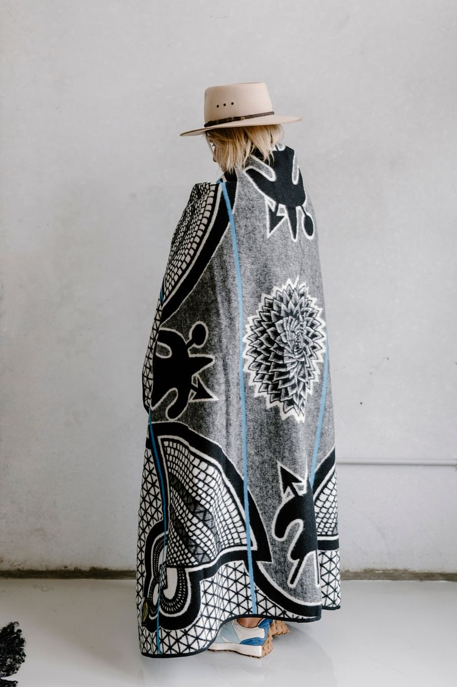
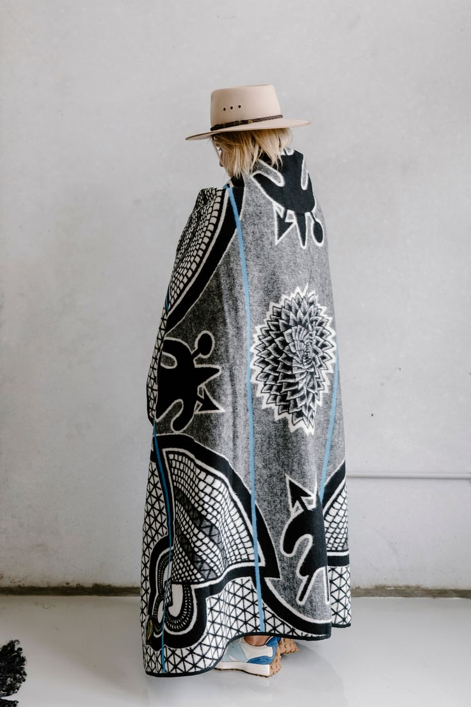

Discover the rich traditions, vibrant culture, and artistic expressions of the Basotho people of Lesotho
The Basotho people have a proud cultural heritage that spans centuries. This website celebrates the traditions, customs, and artistic expressions that define the Basotho identity. From the iconic Basotho blanket to the rhythmic sounds of traditional music, from intricate craftwork to colorful festivals, explore the elements that make Basotho culture unique and enduring.
Join us on a journey through the rich tapestry of Basotho life, where ancient traditions meet contemporary expressions, and cultural pride continues to thrive in the mountain kingdom of Lesotho.
 
